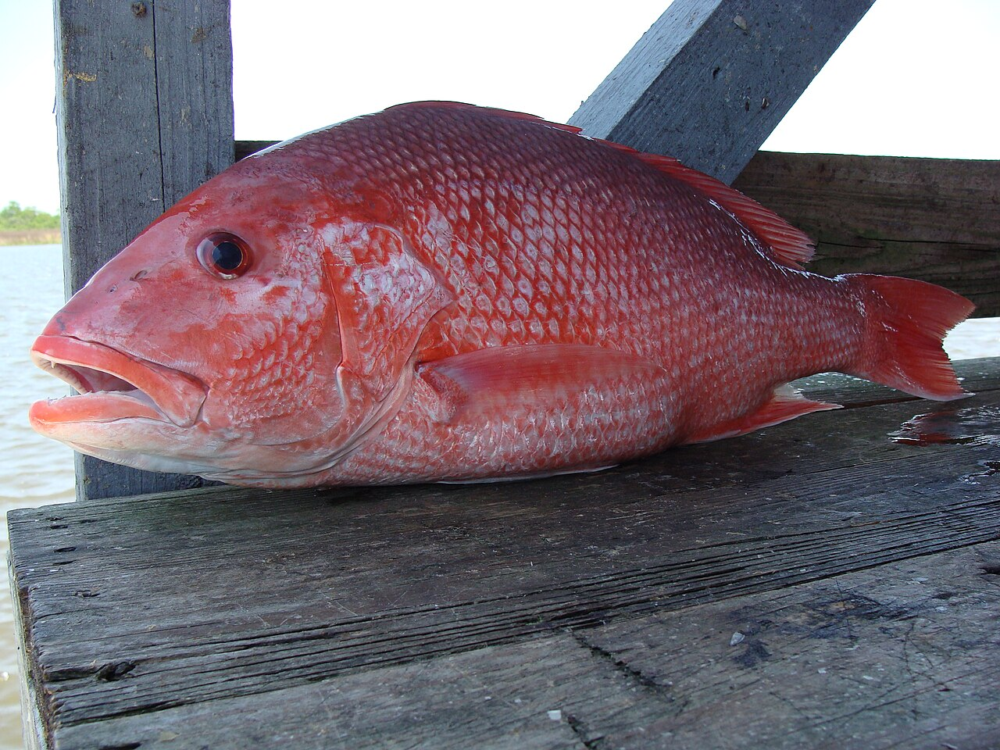
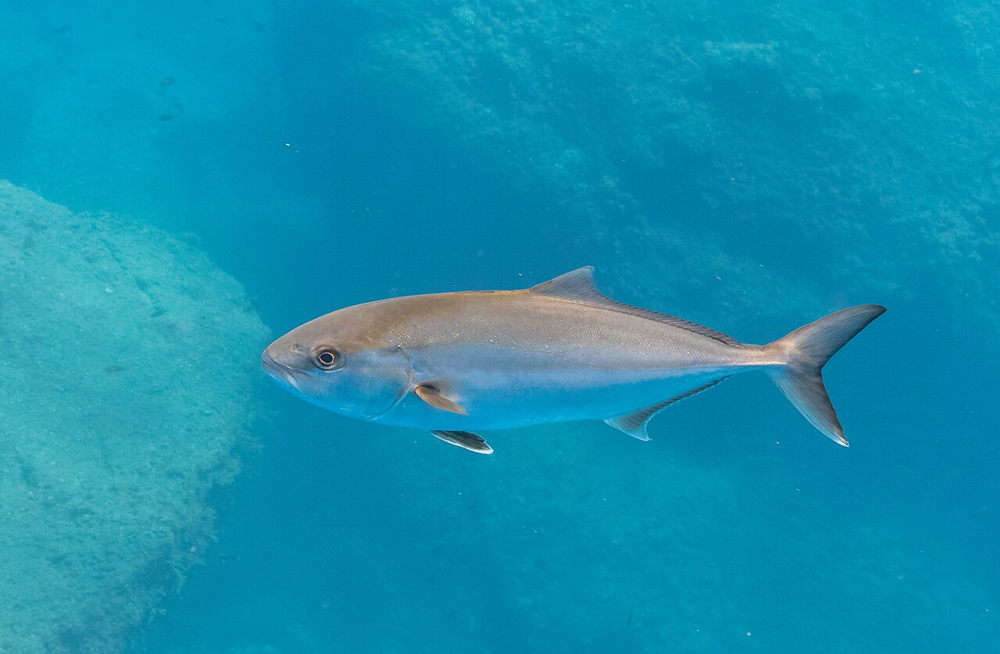
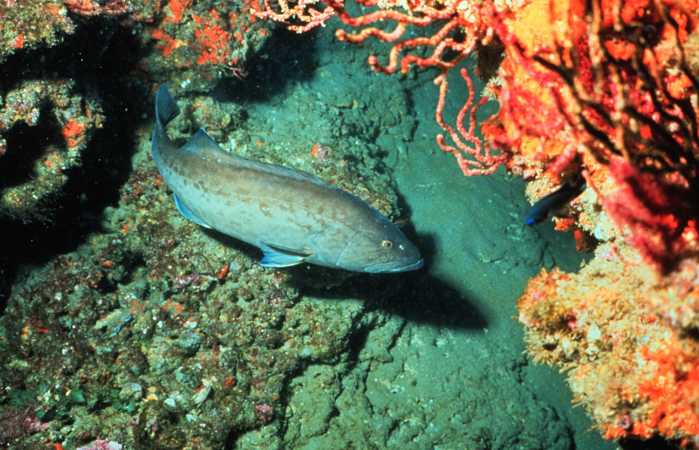
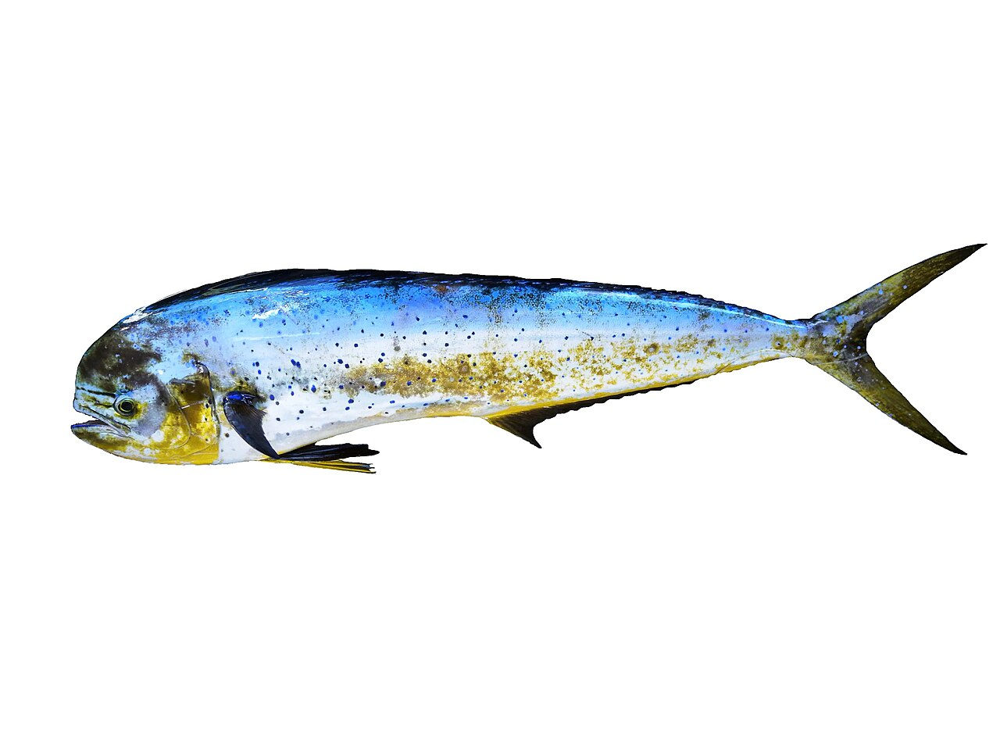
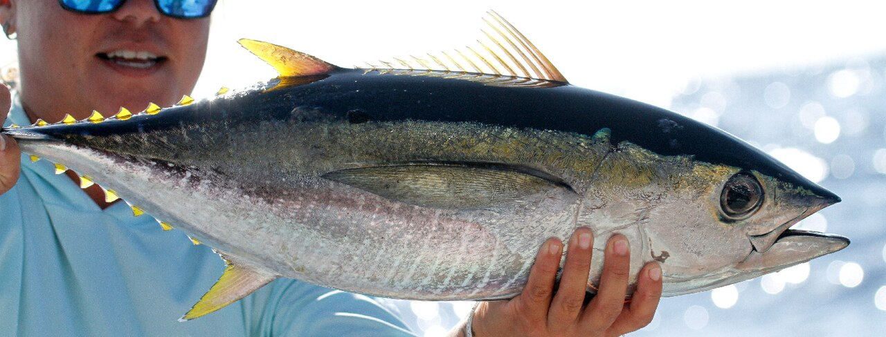
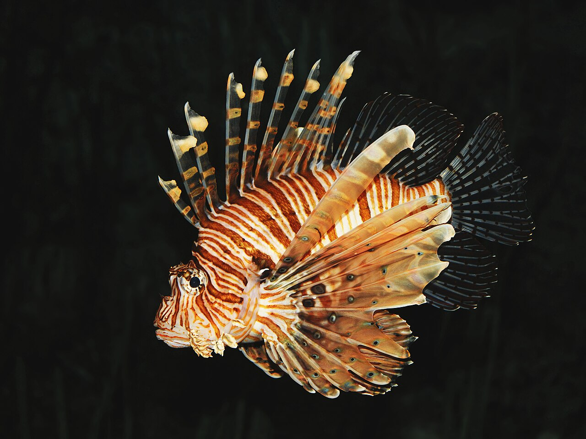

Seasonal priority
Red Snapper
The signature Alabama Gulf prize. Reef and structure work during verified season windows—planned around ADCNR/NOAA notices, not rumor.
Selective itineraries built around the fish serious divers come to the northern Gulf for—not a catch-all tourist menu.

The signature Alabama Gulf prize. Reef and structure work during verified season windows—planned around ADCNR/NOAA notices, not rumor.

Deep structure and platform hunting for experienced divers. Currents, depth discipline, and captain judgment define the day.

Patient work around relief and wrecks when conditions and regulations allow. Selective shots over spray-and-pray.

Weedline and color-change opportunities on offshore runs when the Gulf stacks up. Rig Hunter range makes the difference.

For certified divers ready for longer steam times and bluewater discipline. Weather and visibility gates apply.

Unlimited invasive culling with containment protocols. Protect native reefs while you dive—see our dedicated conservation charter.
Lionfish program